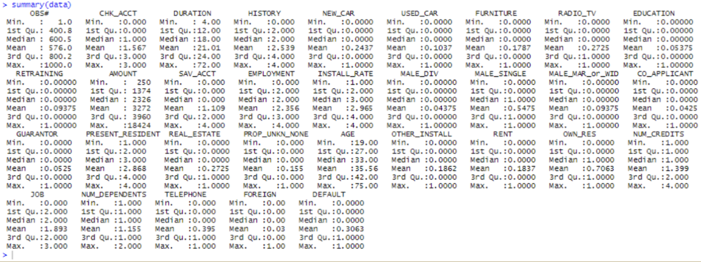
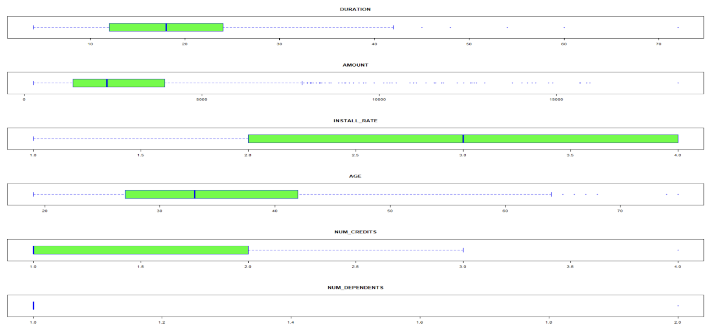
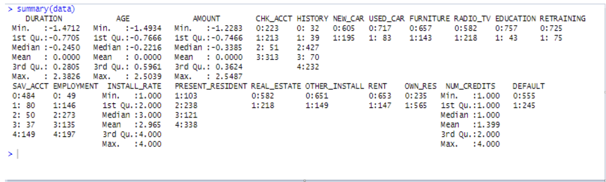
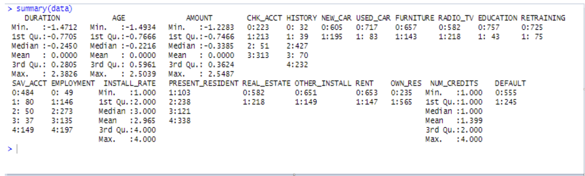
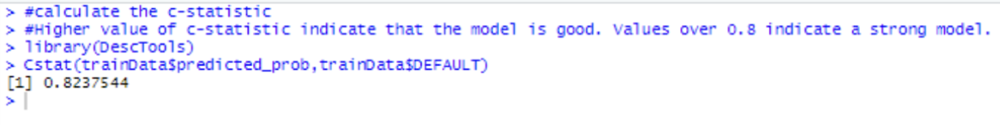

Predicting Credit Application Defaults
Purpose
The objective of the project is to develop a machine learning model that uses historical data to predict the likelihood of default for each new loan application.
Why ML Over Credit Score?
Credit scores are a good way to assess risk, however, utilizing machine learning algorithms to analyze all the features in an applicant’s life gives a more holistic assessment of the risk.
Data Exploration
This step is vital as it allows me to examine the data and check what the data contains and what it lacks. It also allows me to see any problems with data representation that I might need to fix. Below are the results from the data exploration: 
The dataset contains 800 applications with 32 features including the target feature (Default). Some of the features are categorical but are represented in numbers, meaning running any statistics like mean, median, or mode, will not provide any meaningful results on them. This indicates a problem with the implicit data types, which must be fixed. It is also observed that there are no missing values or any other issues with the data as a whole, which simplifies the process. However, many of the features have varying scales (salary has values in the thousands while age is restricted to around 100. Machine learning models will place more emphasis on the larger numbers and this may influence results) and there seem to be some observations that look like outliers, which will need to be analyzed and either removed or restricted. Finally, after looking through all 32 features, I dropped some features due to them not having any real impact on the target. These features include the observation number, gender, etc.
Visual plots are used to further explore and understand the training dataset as shown on the right. From the training dataset, 31% of the applicants defaulted while 59% did not. For context, 0 represents the negative case (no default on loan) and 1 represents the positive case (defaulted on loan).
Data Preparation
As shown by the boxplots, there are several outliers in this dataset. After reviewing them all, I decided to remove all observations that passed the 95th percentile for each feature. This seemed to be the best course of action. Age was similar but I decided to make the cutoff the 97th percentile as that fit for age a bit better. I also normalized all of the features like age and amount but made sure to keep the differences in the range between the values the same with the normalize() function and fixed all of the problems with the implicit data types by specifying that certain variables were categorical and should not be treated as numerical. The box plot and the summary statistics are shown below:
 

Now that all the data is represented properly, I checked the relationships between any two features. If a feature has over a 75% correlation with another, one of the two can be removed as it is unnecessary to have both. As you can see, no two features have a correlation over 75%, so all can be kept.
Modeling
Now that the data is cleaned, the next step lies in the choice of algorithm. This can be decided based on the characteristics of the features in the dataset and how they are represented. Since the target variable, default or not, is binary in nature with a 0 or 1 output, this is a two-class classification problem. This means that the proper algorithm to use must be from the supervised learning algorithm family. With this, I chose logistic regression as the model of choice as the data satisfies all of the criteria for it.
With this in mind, I created an initial model with all of the features included. Doing so gives:
This is quite a bit of information, but it gives useful insights. Using the glm() function to generate the logistic model, it shows that the residual deviance is 728.62 and we get an Akaike Information Criteria (AIC) of 796.62. The lower this value gets the better the model is as an estimator. I also saw that not all of the features are significant (those unmarked with a star or period do not have a large impact on the data), and I used this information to remove certain features as I saw fit. The main purpose of this modeling stage is to lower the AIC value to an optimal value by removing unnecessary features while keeping the initial residual deviance relatively the same. The various step removals are shown on the right with the features that were included:
The lowest AIC value that was obtained is 776 with the total number of features reduced from 34 to 19. This is the optimal number of features for the predictive model.
Note: A model should never be able to correctly predict the data it was trained on with 100% precision. This means the model is not generalized and can only be used for the training data.
Now that the optimal features are set,I built a final model around them using the glm() command.
Performance Evaluation
Once the model is built and has run, I evaluated how effective it was by using the C-Statistic goodness of fit test.The C-statistic gives us an idea about how good a model is at correctly classifying outcomes. A higher value of the C-statistic indicates that the model is good and values over 0.8 indicate a strong model. From the output below, it can be inferred that the model is good

A visual representation of the outcomes are shown on the right. The green diagonal represents the True Positive and True Negative results (The correct results) and the red diagonal represents the False Positive and False Negative results (The wrong results) for the testing data.
Conclusion
This model is shown to predict most but not all credit applications correctly, so how useful is it really in the real world and can it truly save money compared to regular means? I analyze this question below.
I tested how much money the model truly saves by assuming that each bad credit application that is accepted costs 3 units and each good credit application that is rejected as 1 unit.
If the bank accepts 100 applications per day, then, following the data this means that the bank appoves 30 bad credit applications per day. Doing the math for this would mean that the bank loses a total of 3 * 30 = 90 units per day.
Transitioning to the model, it was able to identify 59% of the missclassified bad credit applications. This means that the model saves 0.59 * 90 = 53 units and costs 90 - 53 = 37 units per day.
However, since the model misclassified 21% of good applications, this must be added to the cost. This brings the total cost of the model up to 37 + 21 * 1 = 58 units per day. This is a saving of 36% per day.
Putting this in terms of years, the model saves 37 * (22 working days) = 814 units per month and 814 * 12 = 9768 units annually.
Even if I greatly underestimate the cost of these losses to $200 per unit, the savings would still come out to 9768 * 200 = $1,953,600 annually.
It is safe to say that using the model greatly reduces the incurred losses of the bank and is absolutely worth any costs to implement.